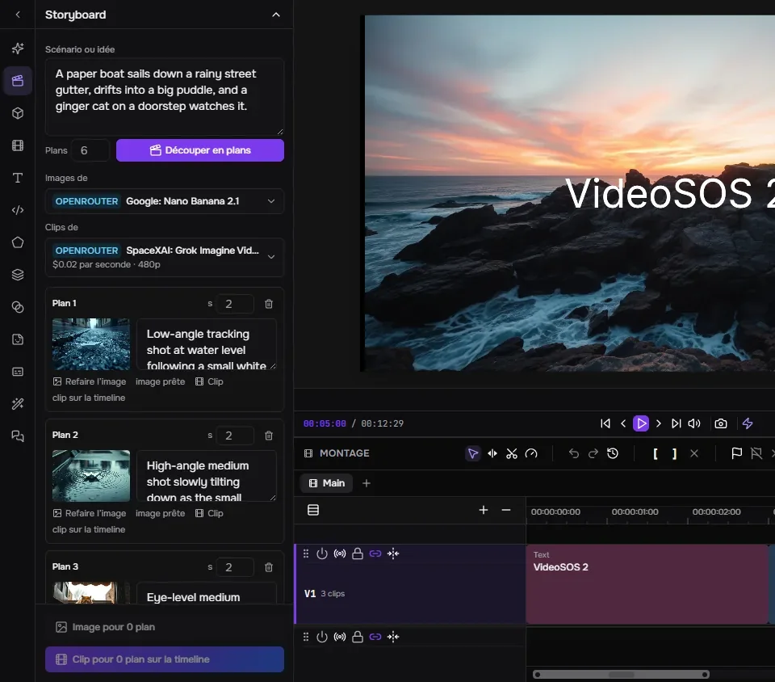
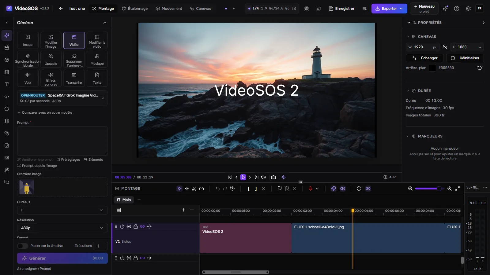
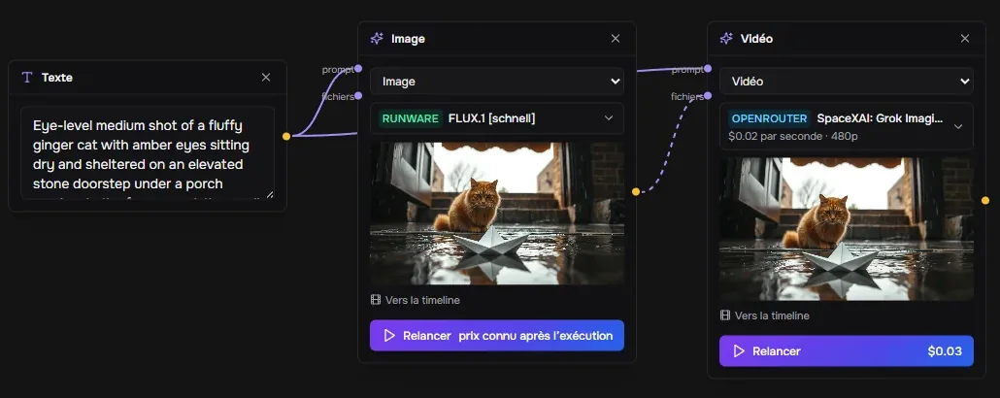
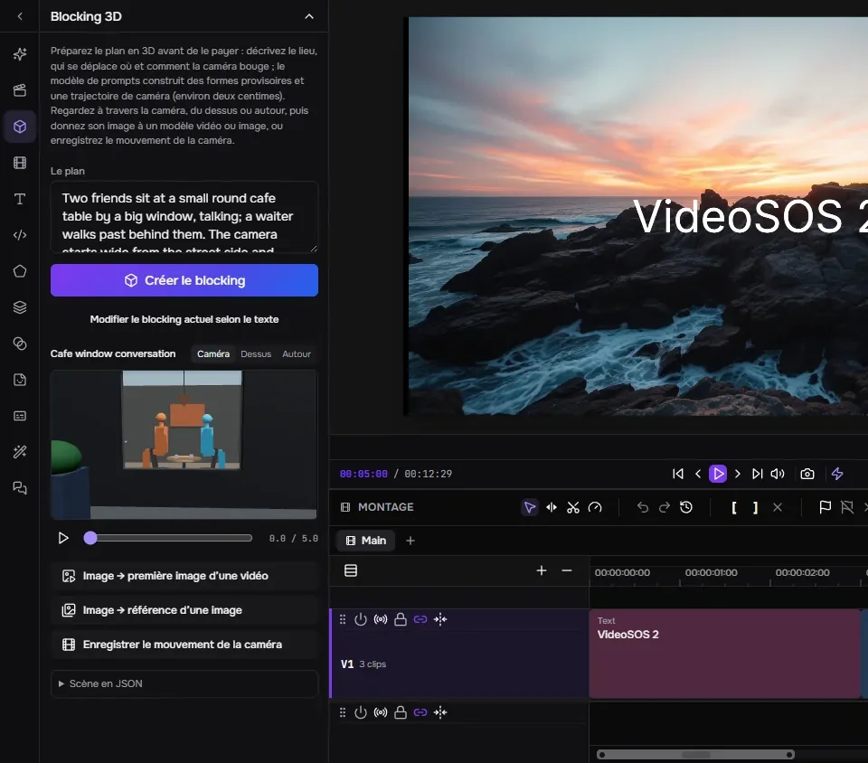
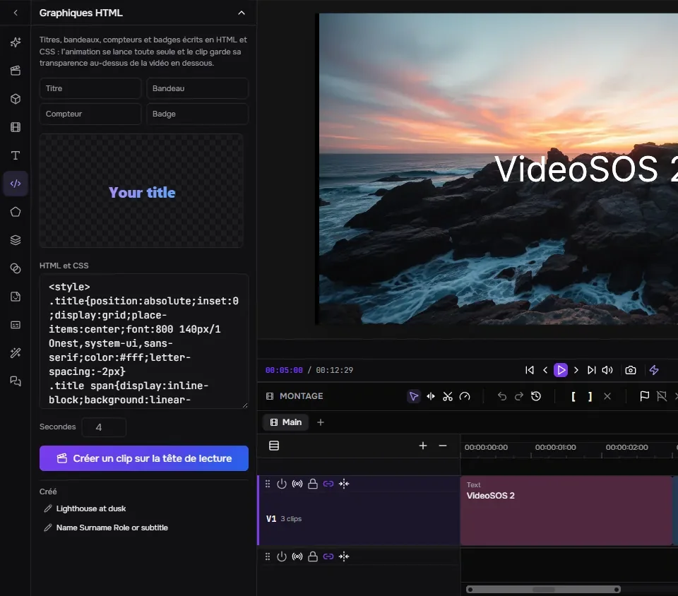
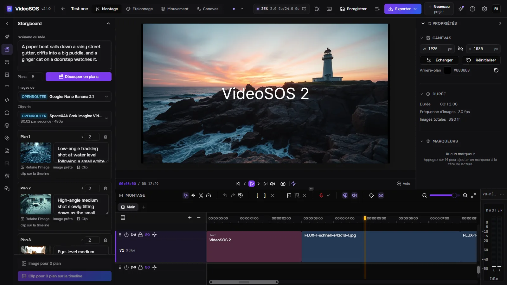
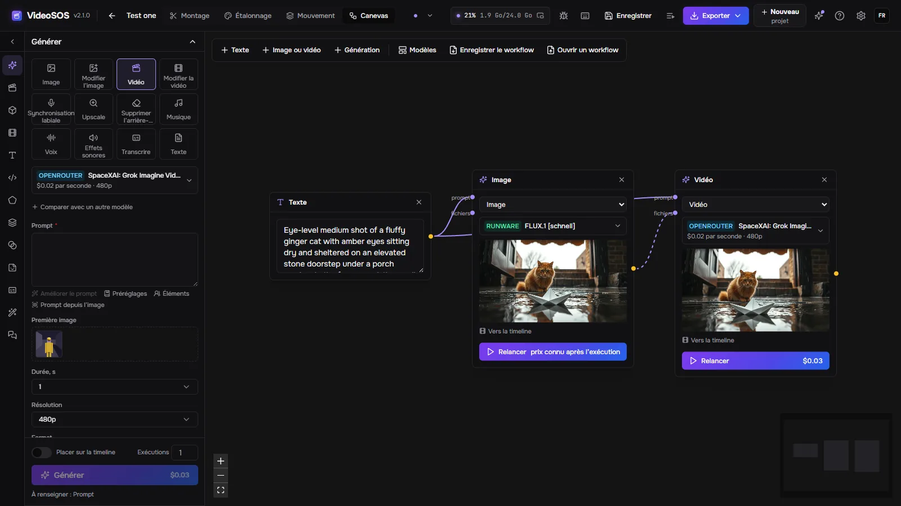
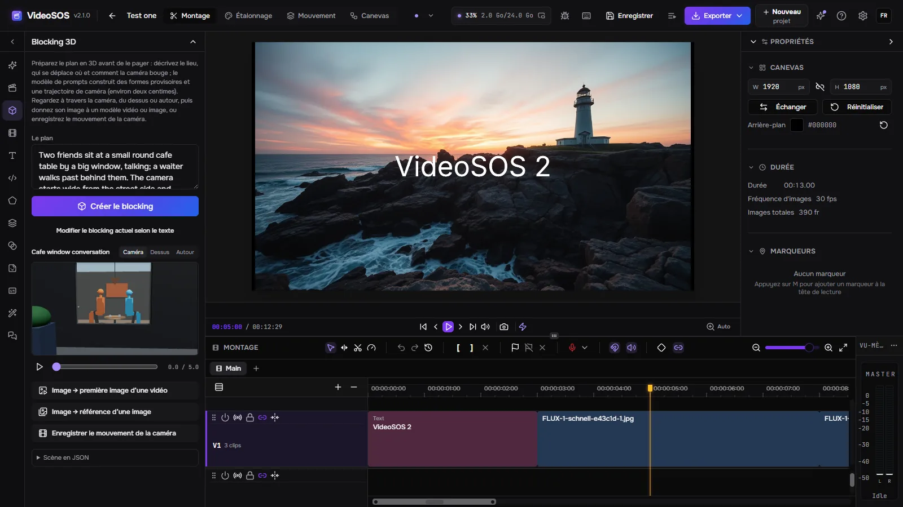
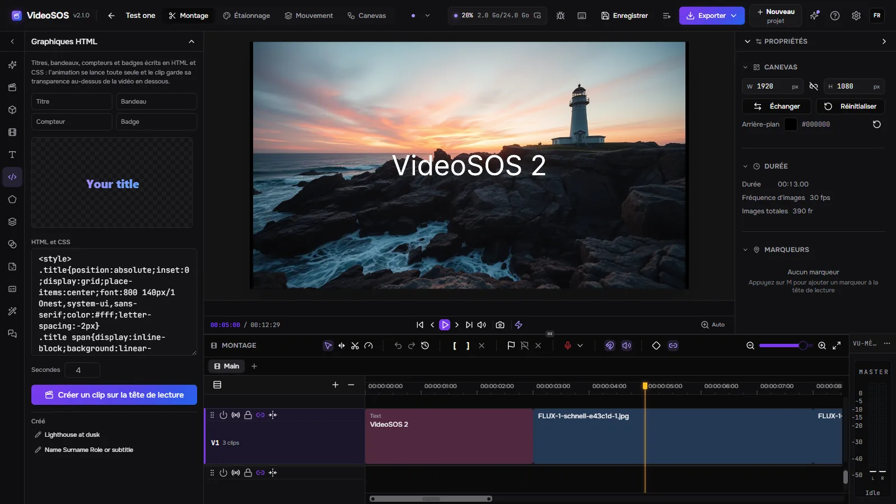

Storyboard

Un modèle de langage découpe un scénario en plans ; chaque plan reçoit une image d’un modèle d’image et un clip d’un modèle vidéo qui démarre sur cette image, et les clips se posent sur la timeline les uns après les autres.
VideoSOS place les meilleurs modèles d’image, de vidéo, de musique et de voix d’OpenRouter, fal et Runware à côté d’un vrai éditeur multipiste. Préparez le film sur un storyboard, un canevas de nœuds et un blocking 3D, générez chaque plan avec vos propres clés au prix affiché avant le lancement, puis montez le tout en une vidéo terminée — ou laissez un agent IA le faire avec vous.
Windows 10/11, Linux (expérimental) et macOS sur Apple Silicon (expérimental). Une carte graphique avec WebGPU est nécessaire pour l’aperçu et l’export. La génération demande une clé OpenRouter, fal ou Runware : vous les payez directement. Les images et la vidéo avec son peuvent aussi être faites gratuitement sur votre propre carte (Windows).

Génération, préparation et montage dans un seul programme, avec vos fichiers sur votre disque.

Un modèle de langage découpe un scénario en plans ; chaque plan reçoit une image d’un modèle d’image et un clip d’un modèle vidéo qui démarre sur cette image, et les clips se posent sur la timeline les uns après les autres.

Texte, images, vidéos et générations sont des nœuds reliés par ce qu’ils transmettent.

Décrivez le plan et un modèle de langage le construit à partir de formes de substitution, de personnages debout et assis, de leurs déplacements et du trajet de la caméra.

Titres, bandeaux, compteurs et badges en HTML et CSS, avec aperçu en direct, transformés en un clip avec transparence qui se superpose à la vidéo à la tête de lecture.
Douze tâches : images, retouches, vidéo à partir d’un texte ou d’une image, retouche vidéo, synchronisation labiale, upscale, suppression d’arrière-plan, musique, voix, effets sonores, transcriptions et textes — plus de mille modèles d’OpenRouter, fal et Runware, lus en direct chez les fournisseurs.
Le formulaire est construit à partir de la description du modèle lui-même et le prix en est déduit avant que vous ne cliquiez sur Générer ; après l’exécution, la facture du fournisseur est enregistrée. Une limite quotidienne retient les agents.
Le même prompt part vers deux autres modèles au plus, et les résultats s’affichent côte à côte avec leurs prix.
Un personnage, un objet ou un lieu conservé sous un nom avec ses images : @nom dans un prompt les envoie au modèle, et le même visage revient plan après plan.
Un lancement est dessiné sur la timeline à l’endroit où il atterrira pendant qu’il s’exécute ; une partie de n’importe quel clip est régénérée sur place ; le clip suivant continue à partir de la dernière image du précédent.
Plusieurs pistes vidéo et audio, ajustements ripple, rolling, slip et slide, transitions, images clés avec courbe de Bézier, masques, modes de fusion, étalonnage avec scopes, texte, formes et sous-titres. Export rapide en MP4, WebM, MOV ou MKV sur la carte graphique, ou en FCPXML pour Final Cut, DaVinci Resolve et Premiere.
Connectez Claude Code, Claude Desktop, Cursor ou Codex et l’agent fait ce que fait la fenêtre : choisit les modèles, estime les prix, génère, modifie la timeline pas à pas, prépare les plans en 3D, crée des graphiques et exporte. La timeline est conservée avant chaque modification de l’agent, une modification peut d’abord être répétée à blanc, et vous pouvez demander à accepter chacune vous-même.
Un modèle OpenRouter de votre choix manipule le programme avec les mêmes outils, pas à pas, avec le coût de chaque étape et un bouton Arrêter.
Un lien YouTube, n’importe quel site connu de yt-dlp ou un fichier direct entre dans la bibliothèque avec progression, annulation et reprise.
Pas de compte chez nous : vous payez directement les fournisseurs. Les projets et les générations sont de simples fichiers sur votre disque ; une tâche est enregistrée avant d’être envoyée et n’est jamais payée deux fois, et les résultats sont téléchargés avant l’expiration des liens des fournisseurs.
Anglais, russe, allemand, espagnol, français, japonais, coréen, portugais brésilien, turc et chinois, effets et paramètres compris.
Un proxy pour les fournisseurs et les téléchargements, et un accès depuis le réseau : un navigateur sur un autre ordinateur ou un téléphone ouvre la même interface avec une clé d’accès pendant que tout s’exécute ici.
MiniMax-H3 et LTX-2.5, vidéo avec son, tournent sur cet ordinateur avec stable-diffusion.cpp (CUDA, Vulkan ou le processeur), quantifiés et avec des préréglages d’accélération : sans clé et sans facture. Les fichiers qu’un autre programme de l’auteur possède déjà sont repris de lui au lieu d’être téléchargés.
Tant que YuE2 Studio, MiniMax Music3 Studio ou ACE-Step Studio est ouvert, il apparaît dans Musique avec son propre formulaire ; le studio fait la chanson et son fichier arrive dans la médiathèque.
Tant que Speech Studio est ouvert, chacun de ses moteurs ici — Qwen3-TTS, Supertonic 3, Drama 3, Higgs Audio — apparaît dans Voix avec ses voix et ses langues ; le studio dit le texte et son fichier arrive dans la médiathèque.
Le programme lui-même, dans votre langue.




Oui. VideoSOS est gratuit et open source (MIT). La génération se paie aux fournisseurs avec vos propres clés ; le montage et l’export ne coûtent rien.
Pas chez nous. Il vous faut une clé d’au moins un fournisseur — OpenRouter, fal ou Runware — et vous le payez directement ; VideoSOS ne voit jamais votre argent et ne montre jamais vos clés aux agents.
Cela dépend du modèle : le formulaire de génération affiche le prix avant chaque lancement, de quelques fractions de centime pour une image rapide à plusieurs dollars pour une longue vidéo, et l’historique conserve le coût de chaque lancement. Un storyboard approuve des images bon marché avant les clips payants.
Seul ce dont une génération a besoin part chez le fournisseur que vous avez choisi. Les projets, les médias et les résultats restent sur votre disque ; les statistiques anonymes sont désactivées sauf si vous les activez, et n’incluent jamais de prompts, de fichiers ni de clés.
Windows 10 et 11 x64 ; Linux x86-64 et macOS sur Apple Silicon en versions expérimentales. Une carte graphique avec WebGPU exécute l’aperçu et l’export.
Connectez Claude Code, Claude Desktop, Cursor ou Codex et l’agent fait ce que fait la fenêtre : choisit les modèles, estime les prix, génère, modifie la timeline pas à pas, prépare les plans en 3D, crée des graphiques et exporte. La timeline est conservée avant chaque modification de l’agent, une modification peut d’abord être répétée à blanc, et vous pouvez demander à accepter chacune vous-même.
claude mcp add --transport http videosos http://127.0.0.1:8796/mcp
Une coque Tauri exécute le serveur Rust dans le même processus ; la fenêtre est un fork de l’éditeur FreeCut auquel s’ajoutent le panneau de génération, le storyboard, le canevas, le blocking 3D et le pont de l’agent. Les tâches vivent dans SQLite, les fichiers sur votre disque.
React window (FreeCut fork) ─┐
├─ VideoSOS.exe (Tauri shell + Rust/axum server inside)
Rust axum server ────────────┘ │
├─ OpenRouter · fal · Runware (your keys)
└─ MCP http://127.0.0.1:8796/mcp